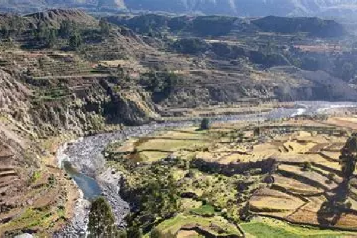
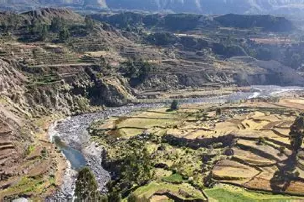
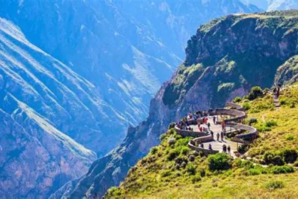
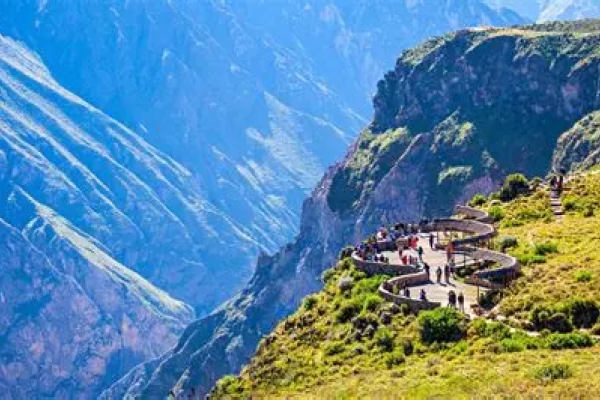
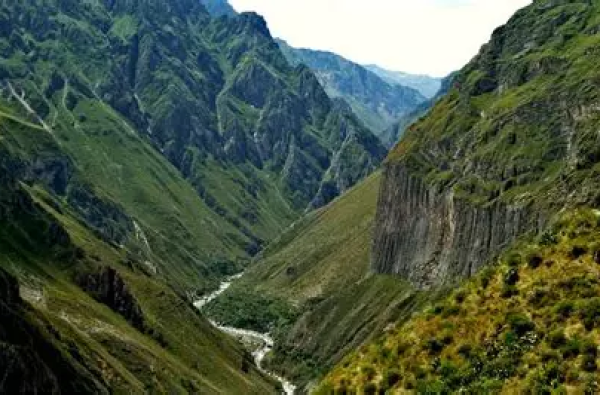
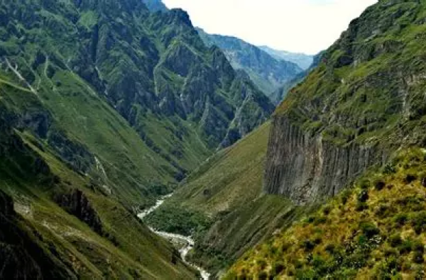

Ses parois abruptes, sculptées par la rivière Colca, créent un panorama à couper le souffle. Les amateurs de randonnées peuvent explorer des sentiers pittoresques le long du canyon, offrant des vues dégagées sur les paysages. Ce canyon est également un sanctuaire pour la faune. Vous aurez la chance d'observer des condors des Andes majestueux planant dans les cieux, parmi une grande variété d'oiseaux, de vigognes et d'autres espèces adaptées aux conditions extrêmes de l'altitude.
 

 

Le canyon de Colca est imprégné de la culture andine. En visitant les villages locaux tels que Chivay et Yanque, vous pourrez découvrir les traditions ancestrales des habitants, leurs marchés artisanaux colorés et leurs festivités traditionnelles. En somme, le canyon de Colca est une invitation à la découverte de la nature dans toute sa splendeur, à la rencontre de cultures riches et à l'aventure en plein cœur des Andes. Si vous êtes à la recherche d'une expérience qui combine la beauté naturelle, la biodiversité et l'immersion culturelle, le canyon de Colca au Pérou est un choix parfait.
Vous pourrez pratiquer de nombreuses randonnées à travers tout les sentiers possibles. Vous passerez probablement à côté du mirador de la Croix du Condor, admirez la vue et profitez de ce superbe canyon. Vous pourrez également faire quelque halte dans les petits villages qui se trouvent tous autour du canyon. Profitez-en aussi pour admirer ruines et volcans.
Voici une séléction de solutions d’hébergements pour votre séjour au Canyon. Cette sélécion comprends des logements de plusieurs types afin que vous puissiez loger dans un endroit qui vous plaise, peu importe vos préférences personelles.
La Granja del Colca
Casa Andina Classic Colca (hôtel champêtre)
Paraiso Las Palmeras
De même que pour les hébergements, nous vous proposerons ici plusieurs restaurants locaux, afin que vous puissier manger ce qui vous chante, quels que soient vos goûts !
El Balcon de Don Zacarias (cuisine locale)
Restaurante Cabanita's Place (cuisine locale)
Vous pourrez prendre un bus entre l’aérport de Cerro Colorado et du canyon, afin de vous y rendre.
| Moyen de Transport | Distance | Durée du trajet | Escale(s) |
Prix | Emission Carbone |
|---|---|---|---|---|---|
| Avion |
15355km |
21h25 |
2 | 1738€ |
1488kg |